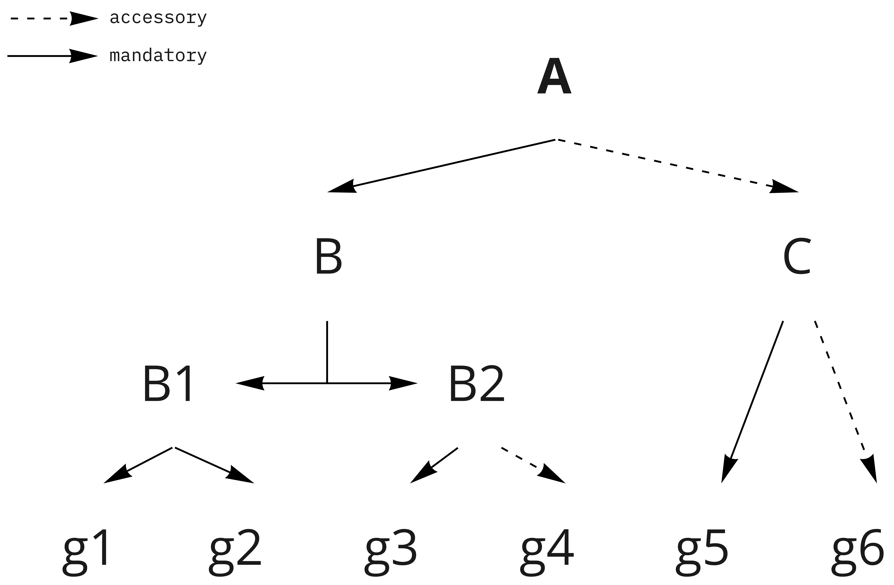

Input dataset¶
Command-line options¶
usage: run_GutFunFind.py [-h] -g -b -f -o Identify genes related function of interest in genome optional arguments: -h, --help show this help message and exit -g , --genomeprefix The prefix of genome -b , --databasedir The base dir of function -f , --function Name of the function -o , --outputprefix The output prefix
Input genome data structure¶
-gshould be followed by the prefix of genome${prefix}.The folder should include: genome sequences(
${prefix}.fna), protein sequences(${prefix}.faa) and annotation(${prefix}.gff).In the example below:
$ ls input.folder/ > MGYG-HGUT-03390.faa # protein sequences > MGYG-HGUT-03390.fna # genome sequences > MGYG-HGUT-03390.gff # annotationsThe prefix should be
input.folder/MGYG-HGUT-03390By default we can use Prokka to annotate the genome.
Function configuration data structure¶
-bshould be followed by the data folder(${data}) that contains the configuration files for all functions.$ ls data/ > Flagellar # Where the configuration file for Flagellar stored > Mucic_and_Saccharic_Acid # Where the configuration file for Mucic_and_Saccharic_Acid stored
-fshould be followed by the name of the function(${function}).$ ls data/Mucic_and_Saccharic_Acid/ > bait.fa > bait.fa.phr > bait.fa.pin > bait.fa.psq > cluster.ini > config.ini > detect.ini > filter.ini > ortho_query_pair.tsv > system.json
Configuration file¶
config.ini¶
[main] base.dir = /home/jiangx6/data/10.GutFun/01.GutFunFind/GutFunFind/data/Mucic_and_Saccharic_Acid detect.tool = blast detect.config = %(base.dir)s/detect.ini cluster.tool = DBSCAN cluster.config = %(base.dir)s/cluster.ini system.file = %(base.dir)s/system.json
Name
Description
base.dir
The folder where all configuration file store([TODO]: remove dependence later)
detect.tool
The method used to detect the genes option:
blast
hmmer
interproscan
detect.config
The path to the configuration file that store the detect method information
cluster.tool
The method used to cluster the genes option:
DBSCAN
system.file
The path to describe the structure of the function system
detect.ini¶
[blast] base.dir = /home/jiangx6/data/10.GutFun/01.GutFunFind/GutFunFind/data/Mucic_and_Saccharic_Acid blast.query = %(base.dir)s/bait.fa blast.exec = blastp blast.evalue = 1e-4 blast.threads = 8 filter.config = %(base.dir)s/filter.ini map.ortho_pair = %(base.dir)s/ortho_query_pair.tsv
Name
Description
[blast]The header of the detect configuration. Should be consistent with
detect.toolin theconfig.inifile.base.dir
The folder where all configuration file related to detection store([TODO]: remove dependence later)
blast.exec
The executable tool will be passed to the cmd to run blast
blast.evalue
The evalue will be passed to the cmd to run blast
blast.threads
The number of threads will be passed to the cmd to run blast ([TODO]: optional)
filter.config
The path to the configuration file that store the filter configuration ([TODO]: optional)
map.ortho_pair
The path to the file that specify how the name(unique) of sequence in
blast.querycorrspond to orthoIDAn example of the map.ortho_query_pair files:
$ cat ortho_query_pair.tsv > gudD ecoli_gudD > gudP ecoli_gudP > garK ecoli_garK > garD ecoli_garD > garL ecoli_garL > garP ecoli_garP > garR ecoli_garR > gudD cclostridioforme_GudD1 > garD cclostridioforme_GarD > gudA cclostridioforme_gudA > gudB cclostridioforme_gudB > gudC cclostridioforme_gudC > gudD cclostridioforme_GudD2 > garL cclostridioforme_GarL > garR cclostridioforme_GarR
filter.ini¶
[filter.global] evalue = 1e-6 bitscore = [filter.local]
Name
Description
[filter.global]Use to specify filter criteria that will apply to all orthoID group
evalue
Use to specify filter evalue criteria that will apply to all orthoID group
bitscore
[TODO]: Use to specify filter bitscore criteria that will apply to all orthoID group
[filter.local][TODO]: Use to specify filter criteria for individual orthoID
Attention
The parameters in filter currently only support use evalue to filter all the orthoID. We will work on it to make it support orthoID level filter.
Attention
The parameters in detect.inc and filter.ini is detection method specific. Currently we only support blast, but we will work on Hmmer and Interproscan later.
cluster.ini¶
[DBSCAN] # Parameter pass to sklearn.cluster.DBSCAN cluster.eps = 4 # Parameter pass to sklearn.cluster.DBSCAN; The number of function-related-genes (or total weight) in a neighborhood for a point to be considered as a core point. cluster.min_samples = 1
Name
Description
[DBSCAN]The header of the cluster configuration. Should be consistent with
cluster.toolin theconfig.inifile.cluster.eps
Parameters required for DBSCAN to run
cluster.min_samples
Attention
The parameters in cluster.inc is cluster method specific. Currently DBSCAN is the only detection method we are using.
system.json¶
Json formatted file that specify how the components are organized to perform a function.
Example Structure
JSON formatted file

Name
Description
name/orthoID:(str)
The name of the components/ The orthoID
components:(list)
The list of subcomponents
presence:(option)
“mandatory”, “accessory” or ([TODO]) “forbidden”
analogs:(dict)
Followed an equivalent component
{kind=link}